-
【10位】 スパチキ
スパチキは、クリスピーなフライドチキンの中に、ピリッとしたスパイスが効いたソースが絡んでいます。バンズはふわふわで、チキンとの相性が良く、食べ応えもあります。
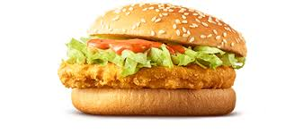
-
【9位】 チキンフィレオ
チキンフィレオのパティは、ジューシーで柔らかく、しっかりとした味が特徴です。外側はサクサクとした衣で揚げられており、食感が良く、食べ応えもあります。チキン自体が脂っこくなく、さっぱりとした仕上がりなので、ヘルシー志向の方にもおすすめです。
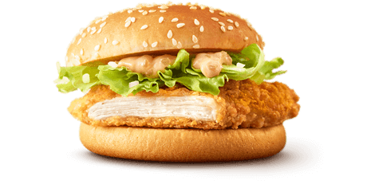
-
【8位】 エグチ
マクドナルドのエグチ
は、ビーフパティに目玉焼きとチーズが乗ったハンバーガーです。目玉焼きのふんわりとした食感と、チーズのコクが絶妙にマッチし、満足感のある味わいです。マヨネーズベースのソースと野菜がバランスよくアクセントを加えています。朝食や軽食として人気があり、特にチーズと目玉焼きが好きな方におすすめのメニューです。
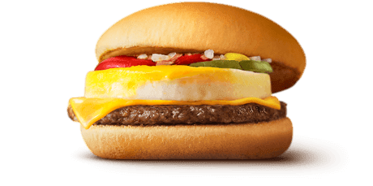
-
【7位】 サムライマック 炙り醬油風ベーコントマト肉厚ビーフ
サムライマック 炙り醬油風ベーコントマト肉厚ビーフは、肉厚なビーフパティに炙り醬油風ソースがかかり、トマトとベーコンがトッピングされたハンバーガーです。炙り醬油風ソースが特徴的で、しっかりとした肉の旨味とソースの風味が楽しめます。トマトとベーコンがアクセントとなり、食べ応えのある満足感のある一品です。
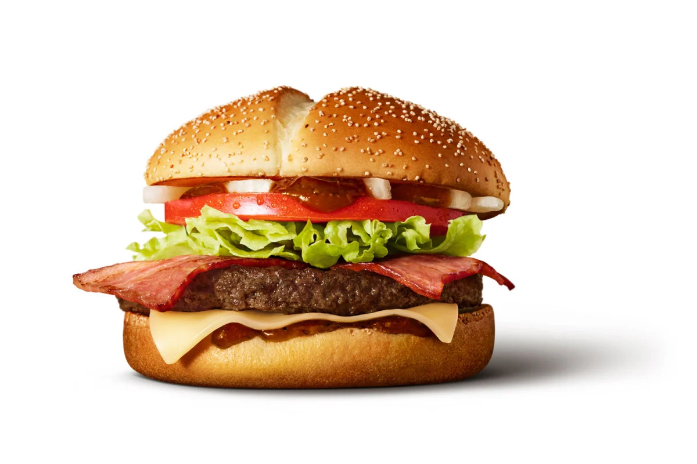
-
【6位】 フィレオフィッシュ
フィレオフィッシュは、柔らかくジューシーな魚フィレがサクサクのバンズで包まれています。タルタルソースとレタスが絶妙なバランスで、さっぱりとした味わいを楽しめます。軽くてヘルシーな選択肢であり、魚料理を求める時にぴったりです。
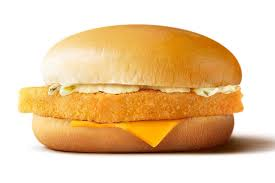
-
【5位】 えびフィレオ
サクサクの衣に包まれたプリプリのえびフィレが特徴です。タルタルソースとレタスが加わり、爽やかで海鮮感溢れる味わいを楽しめます。軽食や海鮮好きにおすすめのメニューです。
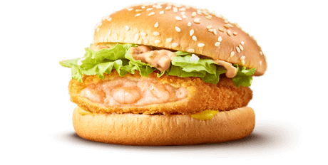
-
【4位】 てりやきマックバーガー
てりやきマックバーガーは、ジューシーなビーフパティに特製のてりやきソースが絡み、レタスとマヨネーズが加わったハンバーガーです。てりやきソースは甘みと辛みのバランスが良く、食べやすく満足感のある味わいです。
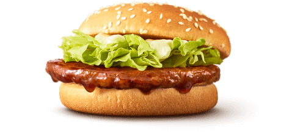
-
【3位】 ダブルチーズバーガー
ダブルチーズバーガーは、2枚のビーフパティと2枚のチーズが挟まれたハンバーガーです。肉のジューシーさとチーズのコクが満足感を高め、シンプルで食べやすい味わいです。
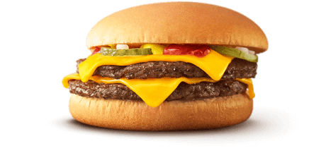
【2位】 サムライマック 炙り醬油風ダブル肉厚ビーフ
炙り醬油風ダブル肉厚ビーフは、ダブルの肉厚ビーフパティに炙り醬油風ソースが絡み、濃厚な肉の旨味と炙り醬油風ソースのコクが特徴で、食べ応え抜群の一品です。
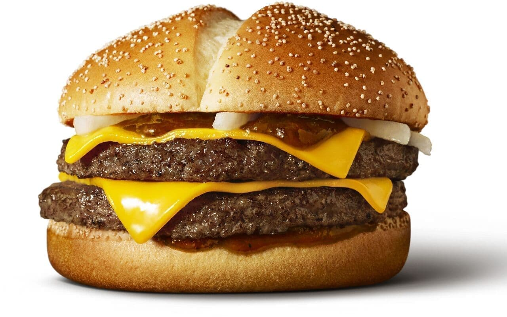
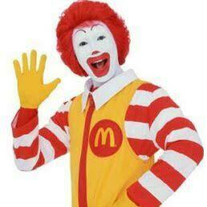
-
【1位】 ビックマック
ビックマックは、二層のビーフパティに特製のマクソースがたっぷりとかかったハンバーガーです。このソースは甘みと酸味、そしてピクルスとの絶妙なバランスが特徴で、バンズと肉の間にレタス、チーズ、ピクルスが挟まれています。全体的に見て、ジューシーで満足感のある味わいであり、マクドナルドの代表的なメニューの一つとして長年愛されています。
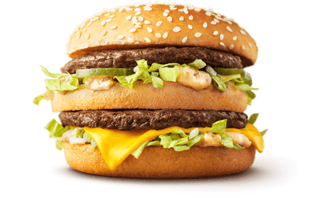
-
マクドナルドの公式ウェブサイトは こちら からご覧いただけます。